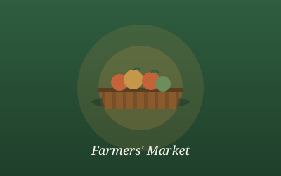
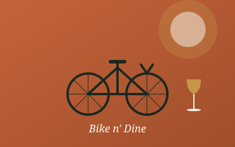
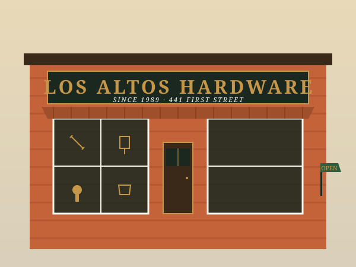

May14
Downtown Farmers' Market
4:00 – 8:00 pm · Every Thursday
Tree-lined streets, more than 150 shops, cafes and salons, and the small-town hum of neighbors who actually know each other. LAVA exists to keep it that way — through events, beautification, and a community that shows up.
Within the six-block triangle you'll find everything from A to Z — a hardware store, a gem & mineral shop, two grocery stores, plus boutiques, cafes, and some of the Bay Area's finest dining. Free parking, on the street and in the plazas.
Boutiques, gift shops, and one-of-a-kind retailers tucked between heritage storefronts.
Browse → 02Sidewalk cafes, neighborhood favorites, and fine dining within a short stroll.
Taste → 03Six walkable blocks of tree-lined streets, plazas, and seasonal flower-pot beauty.
Wander → 04Hidden gems, longtime locals, and the occasional pop-up worth the detour.
Find →
4:00 – 8:00 pm · Every Thursday

5:00 – 8:00 pm
July 11 – July 12
6:00 – 9:00 pm

Locally owned and family-operated for more than 35 years, proudly serving Los Altos and surrounding Bay Area communities. Whether you're a pro or taking on a DIY home improvement project for the first time, they're right here in your neighborhood with the expert advice, tools, and equipment you need.
The Los Altos Village Fund — a 501(c)(3) managed through the Los Altos Community Foundation — funds the seasonal events, street tree lighting, and beautification that make Downtown Los Altos feel like home.
♥ Donate to LAVA501(c)(3) · Contributions may be tax-deductible
The Los Altos Village Association promotes and stewards a vibrant Downtown Los Altos through civic engagement, local partnerships, strategic marketing, beautification, and events that support local businesses and bring the community together.
Showing up for the community we serve — board meetings the third Wednesday of every month, open to merchants and members.
Working hand in hand with city government, the Los Altos Community Foundation, and over 150 member businesses.
Year-round street tree lighting and the flower pots on Main and State Streets — maintained by us, enjoyed by everyone.
From the Easter Egg Party to the Holiday Tree Lighting Ceremony — more than three dozen family-friendly events every year.